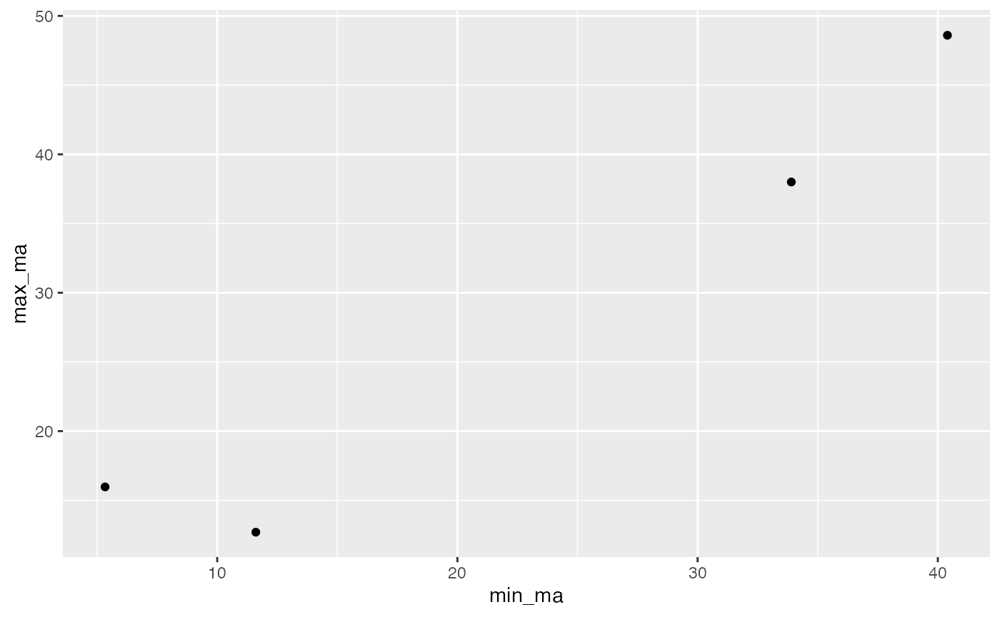

01_package.Rmd##Install the R package.
devtools::install_github("kaylakirby/kirby.package")now load the package
library(kirby.package)#Function One ## Grabbing subfamily related by genus from dataset
This is helpful for when you have multiple Genus and subfamily in columns of a data set and you need to pull subfamily related to certain Genus. This function will need a data set that includes both Genus and subfamilies. It will sort and pull any subfamily related to the Genus that you apply in the “filter” section of the code.You should get only the Genus and subfamily back.
## ── Attaching packages ─────────────────────────────────────── tidyverse 1.3.0 ──## ✓ ggplot2 3.3.2 ✓ purrr 0.3.4
## ✓ tibble 3.0.4 ✓ dplyr 1.0.2
## ✓ tidyr 1.1.2 ✓ stringr 1.4.0
## ✓ readr 1.4.0 ✓ forcats 0.5.0## ── Conflicts ────────────────────────────────────────── tidyverse_conflicts() ──
## x dplyr::filter() masks stats::filter()
## x dplyr::lag() masks stats::lag()
library(assertthat)##
## Attaching package: 'assertthat'## The following object is masked from 'package:tibble':
##
## has_name
FossilAntsData <- read_csv("../inst/extdata/FossilAnts.csv")##
## ── Column specification ────────────────────────────────────────────────────────
## cols(
## taxon = col_character(),
## reference_no = col_double(),
## subfamily = col_character(),
## Tribe = col_character(),
## Genus = col_character(),
## Fossil = col_character(),
## min_ma = col_double(),
## max_ma = col_double(),
## Notes = col_character()
## )
genus_subfamily(Casaleia)## # A tibble: 4 x 2
## Genus subfamily
## <chr> <chr>
## 1 Casaleia Ambyloponinae
## 2 Casaleia Ambyloponinae
## 3 Casaleia Ambyloponinae
## 4 Casaleia Ambyloponinae#Function Two ## Grabbing taxon related by subfamily from dataset
This is helpful for when you have multiple subfamily and taxon in columns of a data set and you need to pull taxon related to certain subfamily This function will need a data set that includes both subfamilies and taxon It will sort and pull any taxon related to the subfamily that you apply in the “filter” section of the code.You should get only the subfamily and taxon back.
subfamily_taxon(Armaniinae)## # A tibble: 15 x 2
## # Groups: taxon [15]
## subfamily taxon
## <chr> <chr>
## 1 Armaniinae Archaeopone_kzylzharica
## 2 Armaniinae Archaeopone_taylori
## 3 Armaniinae Armania
## 4 Armaniinae Armania_capitata
## 5 Armaniinae Armania_curiosa
## 6 Armaniinae Armania_pristina
## 7 Armaniinae Armania_robusta
## 8 Armaniinae Dolichomyrma_latipes
## 9 Armaniinae Dolichomyrma_longiceps
## 10 Armaniinae Khetania_mandibulata
## 11 Armaniinae Orapia_minor
## 12 Armaniinae Orapia_rayneri
## 13 Armaniinae Poneropterus_sphecoides
## 14 Armaniinae Pseudarmania_aberrans
## 15 Armaniinae Pseudarmania_rasnitsyni#Function Three ## Plotting fossil size per Genus
This could be used when you are tryign to compare fossil size of a specific Genus of a data set full of different Genus.You will need a data set with a Genus, max-ma, and min_ma columns. You should get back other the sizes related to that Genus printed to the screen as well as a graph.
fossil_size(Casaleia)## # A tibble: 4 x 3
## Genus min_ma max_ma
## <chr> <dbl> <dbl>
## 1 Casaleia 40.4 48.6
## 2 Casaleia 5.33 16.0
## 3 Casaleia 11.6 12.7
## 4 Casaleia 33.9 38